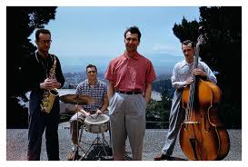

Home
Members
Photo Gallery
Discography
Contact
Quartet Image Gallery
Dave Brubeck band picture
Dave Brubeck and quartet members
Dave Brubeck and quartet
Paul Desmond playing alto sax

Dave Brubeck quartet color picture
Time Out, by the Dave Brubeck Quartet
Quartet Playing Instruments
Desmond - After Dark
Dave Brubeck: Take Five jazz pianist
David Brubeck Palying some good Jazz
Dave Brubeck
Reflecting
Posing for a pic
Dave and Bob Perkins
Joe, Paul, Dave and Eugene
Paul Desmond - Eugene Wright
×
Previous
Next